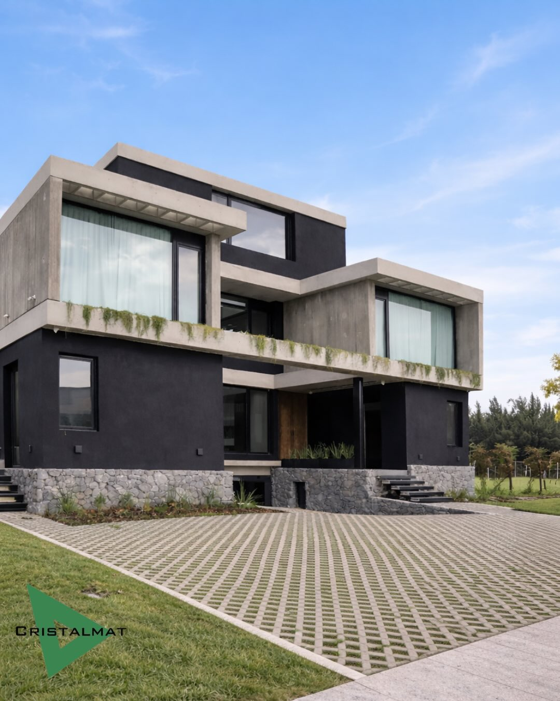

01
Materiales para exteriores
Garden Blocks y adoquines de hormigón para patios, accesos, veredas y cocheras. Te orientamos para elegir el modelo y espesor según el tránsito y las características de tu obra.
Garden BlocksHolanda · 6 y 8 cmUnistone · 6 y 8 cm
